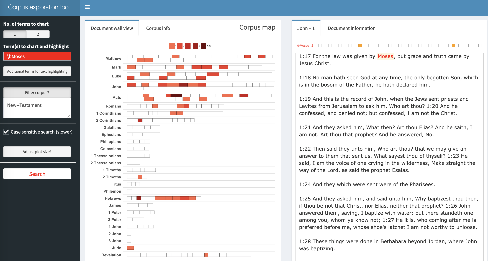

corporaexplorer can be used to explore not only chronological text collections with document date as main organising principle, but any collection of texts. The example used here is the King James Bible.
Before corporaexplorer
Downloading the King James Bible from Project Gutenberg
bible <- readr::read_lines("http://www.gutenberg.org/cache/epub/10/pg10.txt")Pre-processing the text
# Collapsing into one string.
bible <- paste(bible, collapse = "\n")
# Identifying the beginning and end of the Bible / stripping PJ metadata
# (technique borrowed from https://quanteda.io/articles/pkgdown/replication/digital-humanities.html).
start_v <- stri_locate_first_fixed(bible, "The First Book of Moses: Called Genesis")[1]
end_v <- stri_locate_last_fixed(bible, "Amen.")[2]
bible <- stri_sub(bible, start_v, end_v)
# In the file, every book in the bible is preceded by five newlines,
# which we use to split our string into a vector where each element is a book.
books <- stri_split_regex(bible, "\n{5}") %>%
unlist %>%
.[-40] # Removing the heading "The New Testament of the King James Bible",
# which also was preceded by five newlines.
# Because of the structure of the text in the file:
# Replacing double or more newlines with two newlines, and a single newline with space.
books <- str_replace_all(books, "\n{2,}", "NEW_PARAGRAPH") %>%
str_replace_all("\n", " ") %>%
str_replace_all("NEW_PARAGRAPH", "\n\n")
books <- books[3:68] # The two first elements are not books
# Identifying new chapters within each book and split the text into chapters.
# (The first characters in chapter 2 will e.g. be 2:1)
chapters <- str_replace_all(books, "(\\d+:1 )", "NEW_CHAPTER\\1") %>%
stri_split_regex("NEW_CHAPTER")
# Removing the chapter headings from the text (we want them as metadata).
chapters <- lapply(chapters, function(x) x[-1])Metadata
# We are not quite happy with the long book titles in the King James Bible,
# so we retrieve shorter versions from esv.org which will take up less
# space in the corpus map plot.
book_titles <- read_html("https://www.esv.org/resources/esv-global-study-bible/list-of-abbreviations") %>%
html_nodes("td:nth-child(1)") %>%
html_text() %>%
.[13:78] # Removing irrelevant elements after manual inspection.
# We add a column indicating whether a book belongs to the Old or New Testament,
# knowing that they contain respectively 39 and 27 books.
testament <- c(rep("Old", 39), rep("New", 27))corporaexplorer
When we first have a data frame with text and metadata, creating a “corporaexplorerobject” for exploration is very simple:
# As this is a corpus which is not organised by date,
# we set `date_based_corpus` to `FALSE`.
# Because we want to organise our exploration around the books in the Bible,
# we pass `"Book"` to the `grouping_variable` argument.
# We specify which metadata columns we want to be displayed in the
# "Document information" tab, using the `columns_doc_info` argument.
KJB <- prepare_data(dataset = bible_df,
date_based_corpus = FALSE,
grouping_variable = "Book",
columns_doc_info = c("Testament", "Book"))Run corpus explorer
explore(KJB)Example: mentions of Moses in the New Testament: 
Example: finding “pearl” in chapters in the Bible that also
include “swine”: